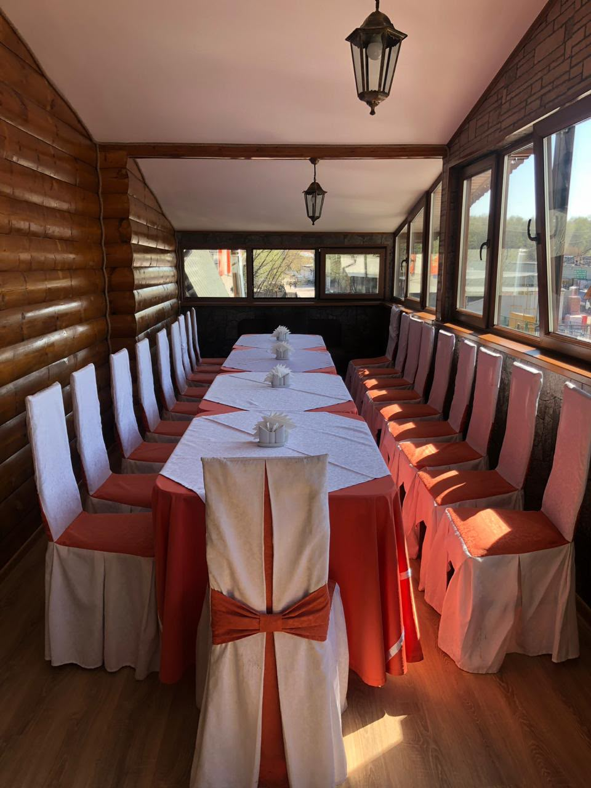
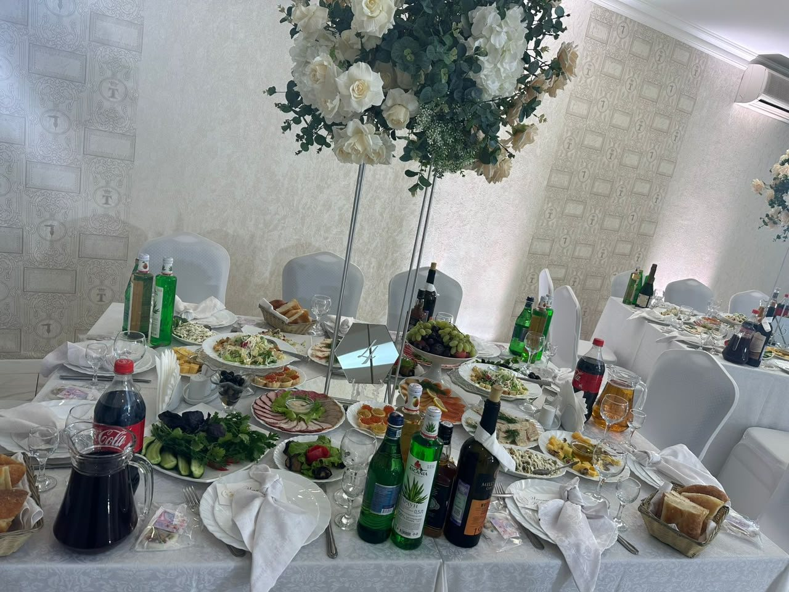
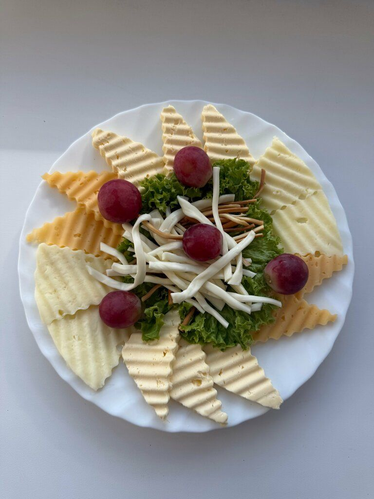

Большой белый зал
до 130 гостей
Светлый зал с галереей. Столы ставят длинными рядами или отдельно — как удобнее для вашего праздника.
Три зала — на 130, 50 и 40 гостей. Банкеты, дни рождения, юбилеи и поминальные обеды.
Позвоните или напишите в WhatsApp: назовите дату и число гостей — администратор подберёт зал и пришлёт банкетное меню.
Юбилеи, дни рождения и семейные праздники — в отдельном зале, без посторонних за соседними столами. Назовите дату и число гостей — администратор подберёт зал.
Администратор подберёт зал по числу гостей.
до 130 гостей
Светлый зал с галереей. Столы ставят длинными рядами или отдельно — как удобнее для вашего праздника.


до 40 гостей
Для небольшой компании: день рождения, ужин с родными или коллегами.

до 50 гостей
Для семейного праздника или обеда в кругу близких.
Пару минут пешком от крематория. Обед можно заказать меньше чем за сутки — каждой семье отдельный зал.
Назовите дату, время и сколько будет гостей.
Шесть вариантов, от 1 800 до 4 000 ₽ на человека. Состав — ниже.
Стол будет накрыт к вашему приходу.






Если вашего вопроса здесь нет, задайте его администратору по телефону.
Позвоните или напишите в WhatsApp: дата, время и число гостей. Администратор подберёт зал и пришлёт банкетное меню.
Обед часто заказывают меньше чем за сутки. Позвоните — администратор скажет, успеют ли накрыть к вашему времени.
Наличными, картой, переводом или по СБП.
Уточните у администратора условия для вашей даты.
Вход и залы доступны на коляске, есть парковка для людей с инвалидностью.
Да, спросите у администратора.